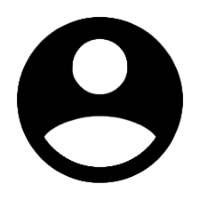
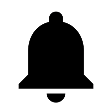
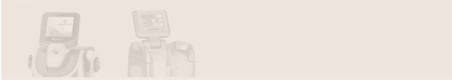

<

Tecnologias
Conheça as tecnologias modernas disponíveis para realizar protocolos específicos e eficientes com
resultados superiores em tratamentos corporais. Saiba mais sobre os procedimentos disponíveis com Luz
Intensa
Pulsada, Etherea MX® e Laser Fracionado para a saúde do
seu corpo e o equilíbrio do seu bem-estar:
Ultrassom Microfocado
O ultrassom microfocado ulthera é um tratamento que foi desenvolvido com o intuito de proporcionar efeito de
lifting facial de forma não-invasiva e não-cirúrgica.
Luz Pulsada
A Luz Intensa Pulsada é uma tecnologia que age através de flashes de luz, atenuando manchas e minimizando os
sinais do envelhecimento
Laser Fracionado
O Laser Fracionado é uma tecnologia indicada para diversos tratamentos corporais, entre eles para atenuar
rugas na face, estimulando a produção de colágeno
ETHEREA X
A tecnologia atua com o conceito de plataforma expansível, proporcionando diversas opções de tratamentos,
através da versatilidade de suas handpieces.